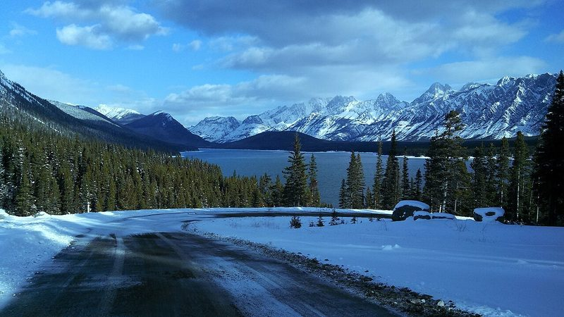
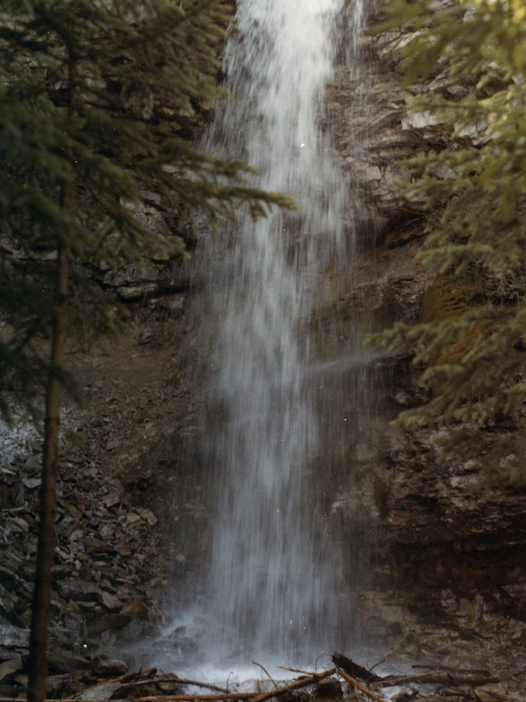
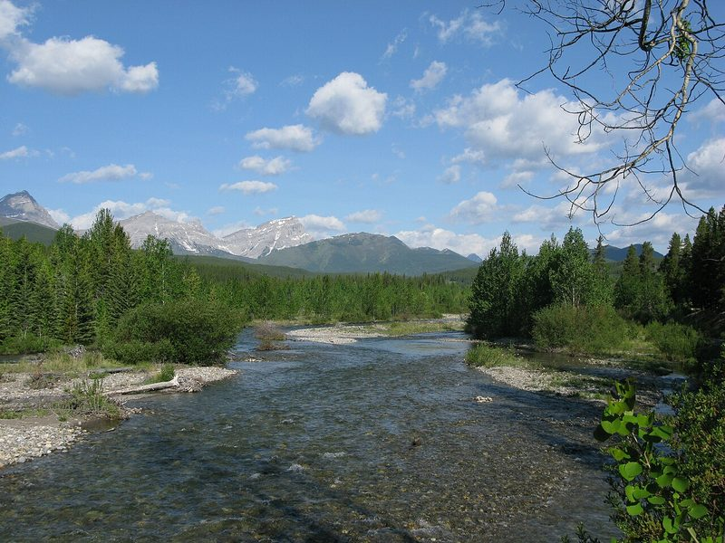
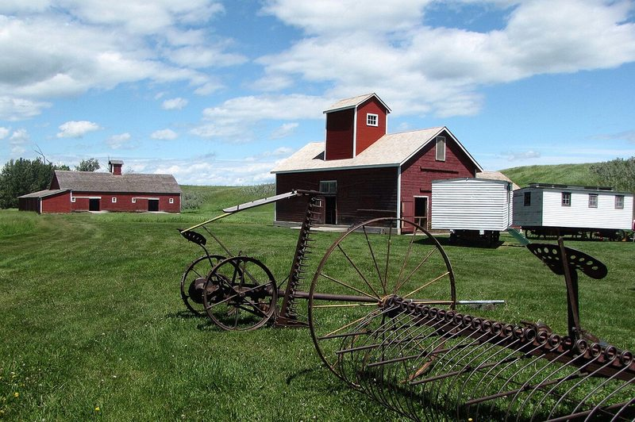
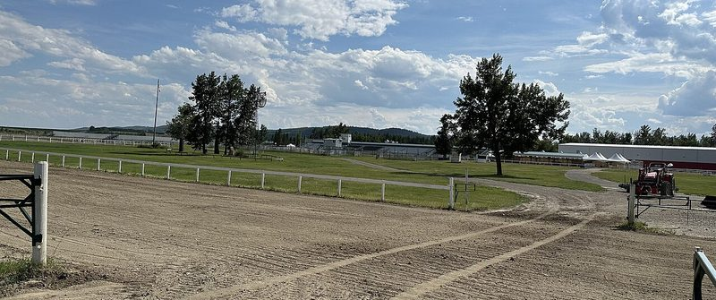
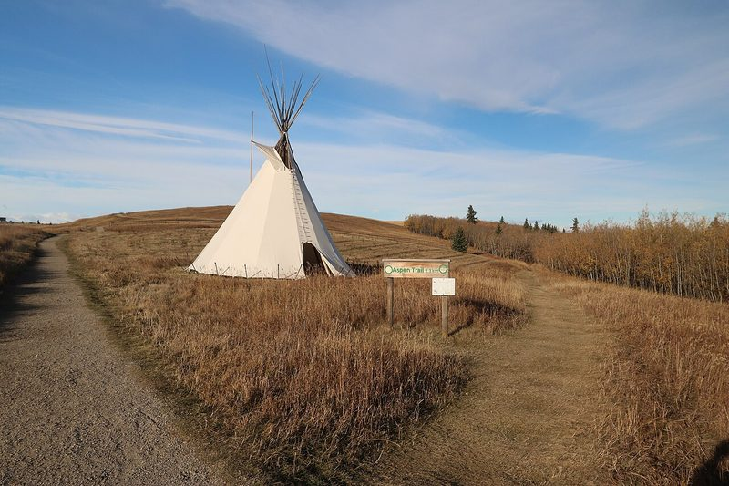
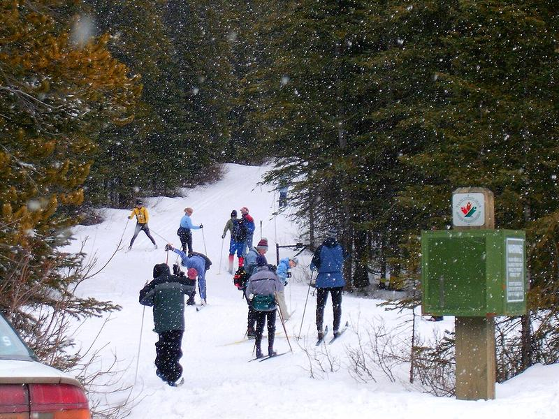

Foothills Kids Outdoors
Adventure starts in the Foothills!
Trails, rivers, ranches and wild places for the whole family 🏔️
🗺️ Get a new scavenger hunt every week
A fresh themed Foothills hunt for kids of all ages, plus weekend outdoor ideas. One email a week, unsubscribe anytime.
Sign me up, it's freeFrom the Highwood River to the edge of Kananaskis, through ranch country from Longview to Okotoks and High River, find family-friendly trails, fishing, horses, wildlife and winter fun for kids of all ages.
Explore the DirectorySee the CalendarPrint a Scavenger Hunt
Find an adventure

🥾 Trails & Hikes
Kid-sized trails and family walks.

🎣 Fishing
Family fishing spots and kids' events.

🐴 Horses & Ranch Life
Historic ranches and western heritage.

🏹 Archery
Try target archery with a local club.

🦌 Wildlife & Nature
Nature centres, programs and wildlife spotting.

❄️ Winter Fun
Skating, skiing, tobogganing and snow play.
Photos via Wikimedia Commons: Trails & Hikes: Photo: Stephanie Macleod, CC BY-SA 4.0 · Fishing: Photo: Wheateater, Public domain · Horses & Ranch Life: Photo: Traveler100, CC BY-SA 3.0 · Archery: Photo: Jonathan Schilling, CC BY-SA 4.0 · Wildlife & Nature: Photo: davebloggs007 (Flickr), CC BY 2.0 · Winter Fun: Photo: Glenlarson, Public domain


.jpg){kind=link}

Why the Foothills
Mountains meet prairie
Rolling hills, big skies and mountain views make every outing feel like an adventure.
Rivers and creeks
Clear water to explore, watch and learn to fish in.
Ranch country
Open land and a western heritage that kids can see up close.
All four seasons
Hiking in summer, colours in fall, snow play in winter, wildflowers in spring.
⚠️ Foothills Safety
- Wildlife & bears: make noise, keep kids close, never approach or feed animals, and know what to do if you meet a bear.
- Changing weather: conditions can shift quickly; pack layers, water and rain gear.
- River safety: water can be cold and fast; supervise kids closely near the bank.
- Tell someone your plan: share where you are going and when you will be back.
This is general guidance only. Check official sources (such as Alberta Parks and local advisories) for current conditions, closures and safety information before you go.